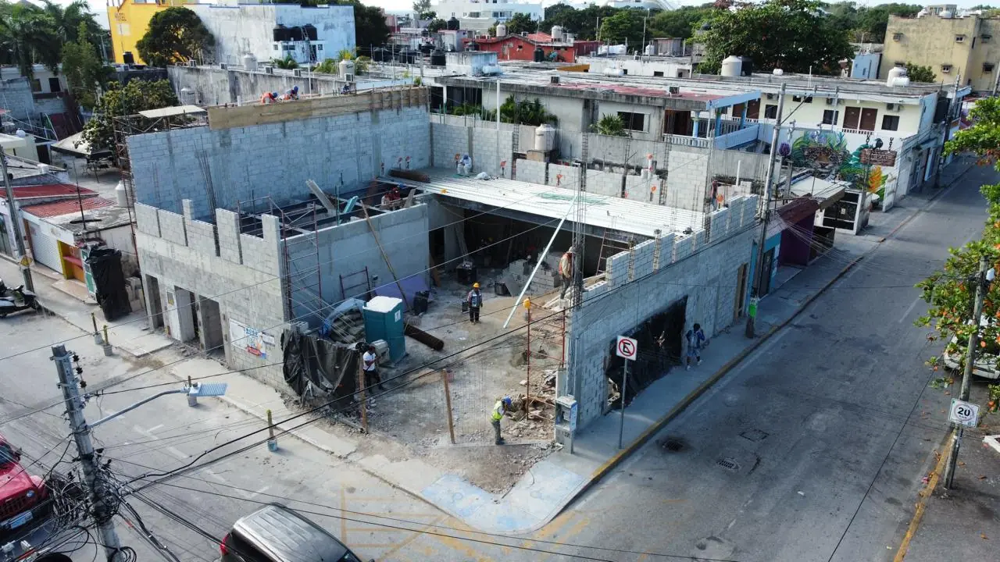

Un solo constructor para cada etapa de una oficina: edificios de oficinas nuevos, adecuaciones llave en mano de obra gris a mudanza, remodelaciones de oficinas en operación y de edificios antiguos completos, coworkings y consultorios médicos y dentales. En Cancún, Playa del Carmen, Tulum y Chetumal, con reportes semanales para corporativos en el extranjero.

Edificios de baja y media altura, en obra gris u oficinas terminadas.
De obra gris o un espacio cansado a una oficina que funciona en fecha fija.
Oficinas en operación y edificios antiguos, por fases, noches y fines de semana.
Energía e internet redundantes, zonificación acústica y cabinas.
Instalaciones especiales, blindaje y licencias sanitarias.
A/C, energía, UPS, red, iluminación y Protección Civil, por programa.
Cada servicio tiene su página para cada ciudad, con zonas de oficinas, reglas y precios locales — vea la tabla abajo.
Estacionamiento, planta de emergencia, redundancia de internet y un A/C que dé para la ocupación real importan más a los inquilinos que los acabados. Diseñamos eso primero, después distribución, acústica, iluminación e imagen.
| Ciudad | Edificio de oficinas | Adecuación de oficinas | Remodelación de oficinas |
|---|---|---|---|
| Cancún | Construcción de edificio de oficinas | Adecuación de oficinas | Remodelación de oficinas |
| Playa del Carmen | Construcción de edificio de oficinas | Adecuación de oficinas | Remodelación de oficinas |
| Tulum | Construcción de edificio de oficinas | Adecuación de oficinas | Remodelación de oficinas |
| Chetumal | Construcción de edificio de oficinas | Adecuación de oficinas | Remodelación de oficinas |
Clúster oficinas: Construcción de coworking · Consultorios médicos y dentales · Oficina en obra gris en torre · Mantenimiento de oficinas · Costo de construir un edificio de oficinas · Costo de adecuar una oficina
Calculadora de costo comercial · Plazas y centros comerciales · Construcción comercial y de oficinas
Envíe el plano o la dirección; visitamos, revisamos el edificio y los permisos, y le enviamos un presupuesto por partidas. Respuesta en 2 minutos.
Cotizar por WhatsAppSu opinión ayuda a otros propietarios a decidir, y a nosotros a mejorar.
Escribir una reseñaVer reseñas en Google